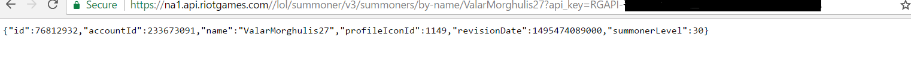
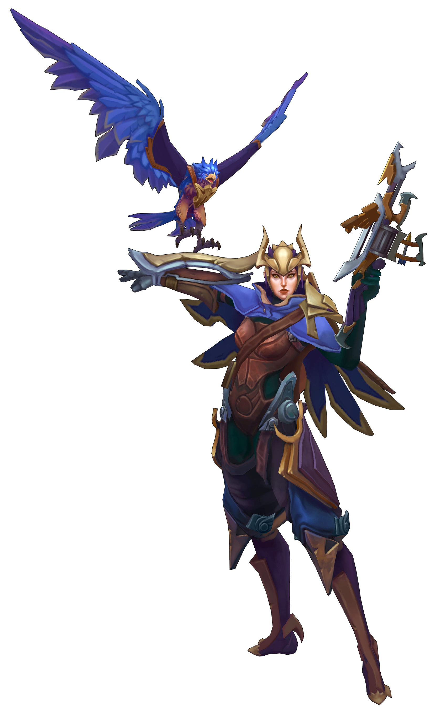

For our first example we will simply make a GET request to get basic information about another LoL player or "summoner". I used my LoL summoner name "ValarMorghulis27" as an example. The results will look something like this: 
This response is in JSON format. I know it doesn't look too impressive right now, and there is not much information someone would be interested in besides maybe my ID number and level, but keep reading and we will show you how to do some cool things.
Now, in order to sucessfully use the API and get the results above we must first make a call. Let us look at the basic JavaScript structure for making a call peice by peice starting with the variable declarations below.
var req = new XMLHttpRequest();
var apiKey = 'YourAPIKeyHere';
var URLhost = 'https://na1.api.riotgames.com//lol/summoner/v3/summoners/by-name/';
var summonerName = document.getElementById("searchQ").value;
var combinedURL = URLhost + summonerName + '?api_key=' + apiKey;
The code above is an example of AJAX. We will not go over the meaning of the name as it is outdated and irrelavant, but what is important to know it its basically asynchronous JavaScript with JSON, or code that is used to communicate to/from a server without the need to refresh a page. A full understanding of AJAX is beyond the scope of this guide, for not let us just break up and unserstand the code used for the API call. The req variable will represent a new request being made to the API, similar to how we can filestream in a programming language. It is standard API call code, nothing too fancy. The apiKey variable will hold the your API key needed to access the API. For the results above I used my API key, but you will replace the 'YourAPIKeyHere' value with your own unique API key you got from following the steps on the getting started page. URLhost holds the page address of the specific API we are calling. In this case, the search summoner by summoner name API.This particular API requires a summoner name to look up. Later I will show you how to use a form to get this value from the user. For now I just hardcoded here in this example. Lastly there is a combinedURL variable which combines all the parts above needed to complete the URL we will request from. The part of the URL that comes after the https and ends in the .com is often called the endpoint.
Next we will use standard code to open a request to the API.
req.open("GET", combinedURL, true);
req.addEventListener('load',function(){
if(req.status >= 200 && req.status < 400){
var response = JSON.parse(req.responseText);
console.log(response);
} else {
console.log('Error in network request: ' + req.statusText);
}});
req.send();
event.preventDefault();
Now don't let this code intimidate you we are basically calling the API via a "GET" method passing it the combined query URL we need for the API and then asking it to console log the summoner information if the request sucessfully goes through. The JSON.parse takes a JSON formatted string and turns it into a JavaScript object so that we can access and modify properties and the req.responseText allows us to display results in a familar text version. We will not go into too much deatail with this code as it is beyond the scope of this guide, but all GET request to the APIs will use the same basic boilerplate code. The results should be similar to the first picture shown above.(On Chrome press F12 and go to console.) Note, you can also get the same results by typing the full url directly onto your browser.
Combined the code will look like this:
var req = new XMLHttpRequest();
var apiKey = 'YourAPIKeyHere';
var URLhost = 'https://na1.api.riotgames.com//lol/summoner/v3/summoners/by-name/';
var summonerName = document.getElementById("searchQ").value;
var combinedURL = URLhost + summonerName + '?api_key=' + apiKey;
req.open("GET", combinedURL, true);
req.addEventListener('load',function(){
if(req.status >= 200 && req.status < 400){
var response = JSON.parse(req.responseText);
console.log(response);
formResponse(response);
} else {
console.log('Error in network request: ' + req.statusText);
}
});
req.send();
event.preventDefault();
On the next page I will show you how you can set up a simple form to get this information on your webpage as well as only grab the information you want from an API call.